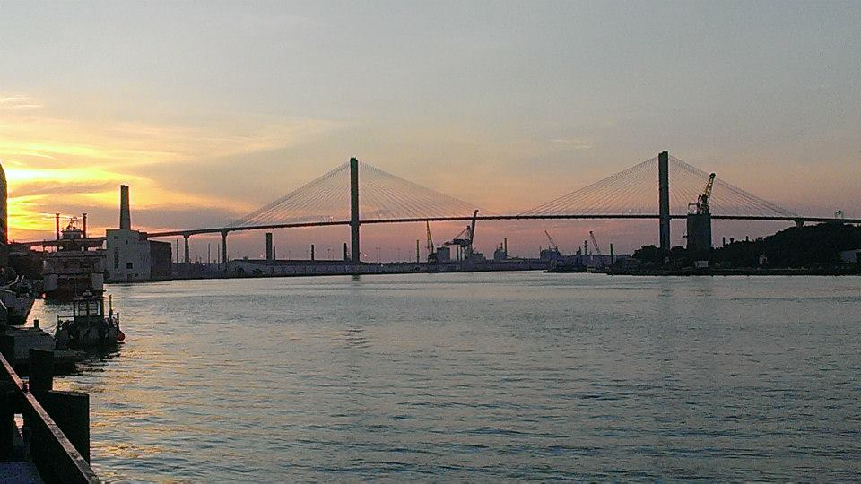

I hail from Wisconsin on the west side of Lake Michigan. Some of my favorite hobbies are juggling, playing mandolin, exercizing, cooking, knitting, suduko, reading, drinking coffee, learning as much as I can and want;) I try to be very 'conscience' of what I do and say. I do my best to tell the truth, and live my life with all its struggles, but man, I am surely blessed when I acheive happiness. I love to travel because of all the unnecessary (maybe necessary) struggles that occur while traveling. The lessons I have learned are due to traveling. Through traveling I have been grateful to have met so many wonderful people. As I learn someething from each person I hope that I am passing on something special to them. I highly recommend making a trip to Wisconsin at some point in time espically visit the Western part of the state. You probably wouldn't believe what you might find in Wisconsin. Like many stories go it starts with a dream. I always had a strong inclination to travel. My first thoughts about travel is when I heard that people travel Europe with only a backpack. This was always an image that I wanted to be painted into. I finally took steps in making a trvel a passion of mine in 2015. I moved to Athens, Georgia to live with my brother. I was 18 years old , and I needed a change in my life. It was a great experience, and moving to GA fueled me to continue my travel plans. During my time in Georgia, I would call my best friend, Hope, back home in Wisconsin, and we would talk about our first trip. We decided on Hawaii, another dream of ours since we became friends. We knew it was more expensive there so we wanted to figure out an affordable plan. WWOOFing came tom mind, (World Wide Opportunites on Organic Farms) This made a lot of sense to us. We packed our bags and set off on our first travel desitnation together. As our wonderful wwoofing experience went on the travel itch became stronger. During our two month stay, we booked our next trip to Europe. We had no clue what we were in for, but we knew we would be alright. Shortly after we came home from Hawaii Hope and I were off to Europe. This was a huge point in my life knowing if I have a dream and enough passion it will happen. My passion for travel has not waded to the side, I have been continously traveling with breaks in between since 2015. Find out more about each of my desitinations, and how I have made travel work for me. Welcome!(firm handshake) I hope you enjoy my stories and will get something out of each one. I always travel with a purpose in the hopes of growing to be a better human being.